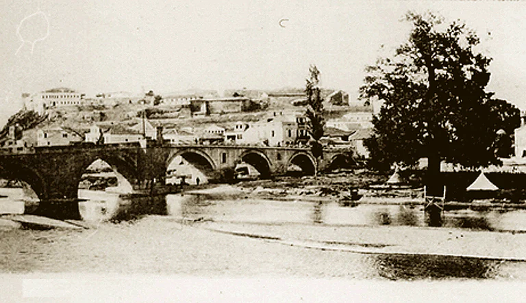
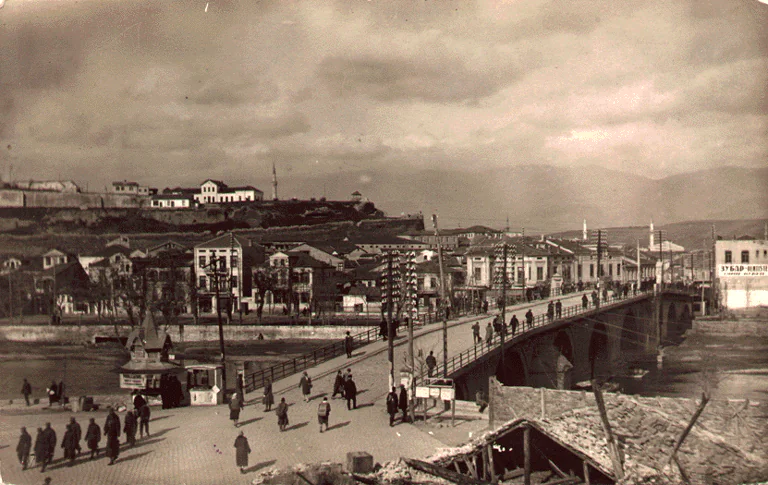
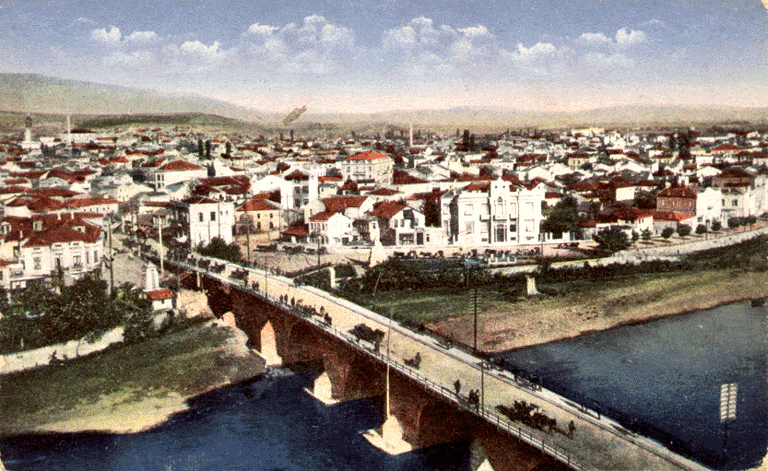
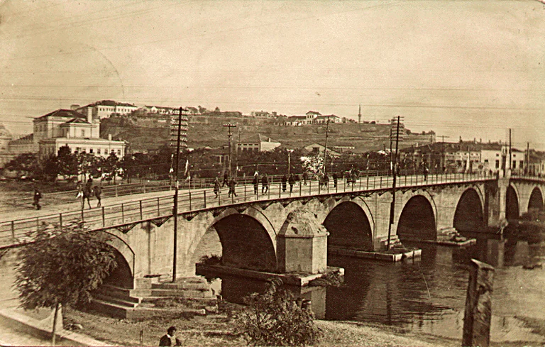
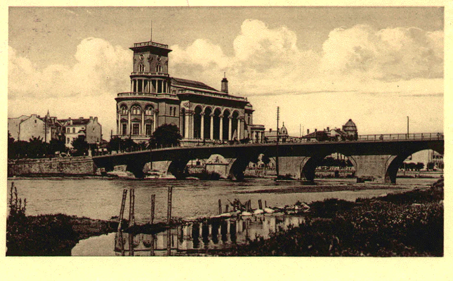

Skoplje 1916. - 1917. most
Dokumenti iz Balkanskih ratova
- Godina
- 1916-1917
- Trajanje
- 00:13

U središtu grada, na Vardaru, izgrađen je monumentalni kameni most (popularno nazvan Kameni most). Prema nekim turskim izvorima most je izgrađen u drugoj polovini 15. stoljeća, za vladavine sultana Mehmeda II. Prema najnovijim istraživanjima iz 1990. godine, pri rekonstrukciji mosta, pretpostavlja se da je most izgrađen u doba Justinijana I. u 6. stoljeću. Izgrađen je od dobro obrađenih kamenih blokova, a konstrukcija mu se oslanja na moćne stupove, međusobno povezane polukružnim lukovima - njih 13. Godine 1905. izgrađene su betonske staze, koje su prije toga bile prekrivene daskama. Godine 1937. proširen je konzolama, na koje su premještene pješačke staze. Na fotografiji je Skoplje krajem 19. stoljeća. Pogled na Kameni most i stari platan. Gore desno je skopska tvrđava - Kale s vojarnom.

Kameni most - kraj 19. stoljeća. U pozadini lijevo vidi se Burmali džamija.

Kameni most - kraj 19. stoljeća. U pozadini lijevo vidi se Burmali džamija.

Skoplje krajem 19. i početkom 20. stoljeća (ljeto) - pogled na Kameni most. U prednjem planu je telefonski stup s poštanskim sandučićem. Odmah uz njega je fenjer, prvi oblik gradske komunalne opreme. Budući da je ljeto, pješaci se od sunca štite suncobranima. Za prijevoz tereta koristila su se volovska kola, a fijakeri su služili kao javno prijevozno sredstvo građana. Odmah uz most desno vidi se veliki vodenički kotač.

Skoplje krajem 19. i početkom 20. stoljeća (zimi) - pogled na Kameni most. U prednjem planu je telefonski stup s poštanskim sandučićem. Odmah uz njih je fenjer, prvi oblik gradske komunalne opreme. Uočavaju se nepopločene blatnjave ulice. U pozadini su Židovska mahala i skopska tvrđava - Kale.

Panorama Kamenog mosta početkom 20. stoljeća.

Kameni most - oko 1905. godine. U pozadini, gore lijevo, vidi se skopska tvrđava - Kale s vojarnama. Desno je stari platan.

Kameni most krajem 19. i početkom 20. stoljeća. Desno gore vidi se skopska tvrđava - Kale.

Skoplje u tursko doba - početak 20. stoljeća. Na fotografiji se vidi da jedna polovica Kamenog mosta ima kamenu ogradu, a druga privremenu ogradu od željeza i drva. Godine 1905. započela je zamjena kamene ograde željeznom. U Skoplju u tursko doba - početak 20. stoljeća. Na fotografiji se vidi da jedna polovica Kamenog mosta ima kamenu ogradu, a druga privremenu ogradu od željeza i drva. Godine 1905. započela je zamjena kamene ograde željeznom. U lijevom kutu, iza Kamenog mosta, vidi se tursko kazalište. Odmah uz most desno vidi se veliki vodenički kotač. Desno je stari platan na kojem je bilo obješeno mrtvo tijelo Karpoša, odmah nakon gušenja Karpoševa ustanka - 1689. godine. U pozadini se u cijelosti vide skopska tvrđava - Kale i stambene zgrade u Židovskoj mahali. Zanimljivo je bijeljenje platna koje su obavljale žene u čistim vodama Vardara - u prednjem planu fotografije.

Skupina Turaka na Kamenom mostu - početak 20. stoljeća. Zanimljivo je primijetiti da su pločnici mosta prekriveni daskama.

Željeznički most na Vardaru u Skoplju - kraj 19. stoljeća.

Kameni most na rijeci Pčinji - okolica Skoplja (danas ne postoji). Sudeći po čovjeku koji stoji na vrhu mosta, visina mosta je oko 15 metara od površine vode. (1910-ih)

Skoplje 1902. godine. Na fotografiji se vidi drveni most, a iza njega stara kavana „Boges“, u kojoj su se održavale prve kazališne predstave. Iznad nje je skopska tvrđava - Kale s vojarnom.

Kameni most - 1905. godina. Lijevo, iza njega, vidi se Tursko kazalište, a u gornjem dijelu skopska tvrđava - Kale.

Pogled prema desnoj obali Vardara kroz krošnju starog platana - oko 1910. godine. Obuhvaćeni su: dio Kamenog mosta, Burmali džamija i dućani ispred Burmali džamije.

Skoplje prije 1912. godine. Kameni most s konzolama i željeznom ogradom. Desno je stari platan, a gore se vidi skopska tvrđava - Kale.

Skoplje za vrijeme Balkanskog rata. U pozadini Burmali džamija.

Pogled na dio Kamenog mosta prema skopskoj tvrđavi - Kale (oko 1910. godine)

Pogled na dio Kamenog mosta, a u pozadini lijevo vidi se tursko kazalište. Iznad njega uzdiže se skopska tvrđava - Kale. (oko 1910. godine)

Kameni most sa skupinom ljudi na njemu - oko 1913. godine

Kameni most na Vardaru u Skoplju - oko 1913. godine

Kameni most na Vardaru u Skoplju - oko 1913. godine. U pozadini, desno gore, vidi se skopska tvrđava - Kale.

Skoplje 1912. godine - umjetnička slika. Kameni most i Burmali džamija. U pozadini je prekrasan zeleni pojas topola. Uočava se interpolacija klasične arhitekture. Funkcija novih prostora keja nov je urbani element. Skupine stambenih, trgovačkih i obrtničkih zgrada ispred mosta u funkciji su i sastavni dio kompozicije, s tradicionalnim obilježjima i elementima europskih utjecaja.

Željezni most na Vardaru u Skoplju s pogledom prema staroj školi, Sv. Mini i Sv. Bogorodici - oko 1920. godine.

Željezni most izgrađen 1905. godine. U pozadini je zgrada prvog Skopskog sveučilišta. (1915. godina)

Željezni most izgrađen 1905. godine. U pozadini je zgrada prvog Skopskog sveučilišta. (1920-ih)

Željezni most na Vardaru u Skoplju, izgrađen 1905. godine. U pozadini je zgrada prvog Skopskog sveučilišta. (1920-ih)

Željezni most izgrađen 1905. godine. (1920-ih)

Željezni most na Vardaru u Skoplju s pogledom na zgrade na keju „Dimitar Vlahov“. (1920-ih)

Skoplje, oko 1920. godine. Dio gradskog trga ispred Kamenog mosta. Prvi kiosci za usputne usluge i prodaju. Kiosci imaju naglašenu arhitekturu u detaljima, tj. u oblikovanju krovova. Most je proširen pješačkim konzolama. U pozadini gore vidi se skopska tvrđava - Kale.

Skoplje, oko 1920. godine. Dio gradskog trga ispred Kamenog mosta. Ispred i na Kamenom mostu uočavaju se male građevine za obavještavanje građana plakatima. Most je proširen pješačkim konzolama. U pozadini, gore lijevo, vidi se skopska tvrđava - Kale.

Kameni most sa skupinom ljudi koji gledaju povišenu razinu vode u Vardaru. (1920-ih)

Kameni most - 1920. godina. U pozadini se vidi Osmanska banka.

Pogled na Kameni most prema Starom gradu i Pajko mahali s ordinacijom zubara dr. Rubensa i Osmanskom bankom - oko 1927. godine.

Pogled na Kameni most prema Starom gradu, čaršiji i obali Gazi Babe. Odmah uz most s desne strane nalazila se ordinacija zubara dr. Rubensa. Malo desnije je zgrada Osmanske banke. Između njih bio je mali trg na kojem je bilo stajalište fijakera. A u sredini trga bio je spomenik palim borcima u Balkanskom ratu - oko 1927. godine.

Pogled na Kameni most prema Starom gradu, čaršiji i obali Gazi Babe. Odmah uz most s desne strane nalazila se ordinacija zubara dr. Rubensa. Malo desnije je zgrada Osmanske banke. Između njih bio je mali trg na kojem je bilo stajalište fijakera. A u sredini trga bio je spomenik palim borcima - oko 1927. godine.

Pogled na Kameni most prema Starom gradu i Pajko mahali s ordinacijom zubara dr. Rubena i Osmanskom bankom - oko 1927. godine.
Pogled prema desnoj obali Vardara s dijelom mosta i Časničkim domom - 1930-ih. Na lijevoj strani vidi se ostatak posječenog starog platana na kojem je 1689. godine, nakon gušenja ustanka, bilo obješeno mrtvo tijelo Karpoša.

Pogled na dio Kamenog mosta, stari platan i skopsku tvrđavu - Kale - oko 1920. godine.

Skoplje, oko 1920. godine. Kameni most sa skopskom tvrđavom - Kale u pozadini. U prednjem planu bijeljenje platna u čistoj vodi Vardara.

Pogled na drveni mostić i kej na desnoj obali Vardara. Zgrade imaju neoklasične i barokne detalje u arhitektonskom izrazu. Ulica je današnja „Ilindenska“. U nizu zgrada je i Srednja glazbena škola. U prednjem planu je drveni mostić preko kojega se dolazilo do Narodnog kazališta.

Drveni mostić na Vardaru, s Časničkim domom u pozadini. Uz njega su zgrade banke i stare pošte - kraj 1920-ih.

Pogled na drveni mostić na Vardaru, a u pozadini se vide Časnički dom, stara pošta i banka - oko 1930. godine.

Pogled prema skopskoj tvrđavi - Kale s vojarnom. Ispod nje nalazi se židovska mahala. U prednjem planu je drveni mostić - 1950-ih.

Pogled prema Narodnom kazalištu i drvenom mostiću - 1930-ih.

Kameni most - 1930-ih. Narodno kazalište u pozadini, a iznad njega skopska tvrđava - Kale.

Pogled na dio trga i Kameni most. U pozadini, lijevo, vide se Narodno kazalište i skopska tvrđava - Kale. Zamjetan je fijaker kao glavno prijevozno sredstvo građana. U prednjem planu srušene zgrade radi izgradnje Narodne banke - oko 1930. godine.

Nabujala voda Vardara. Most je napola prekriven vodom. Fotografija je snimljena s desne prema lijevoj obali - 1930-ih.

Rekonstrukcija i zamjena kaldrme na Kamenom mostu. Pogled na Ristićevu palaču i prve kioske - oko 1930-ih.

Pogled s Kamenog mosta prema trgu. Lijevo je raščišćavanje prostora za izgradnju Narodne banke - 1930-ih.

Pogled s lijeve obale Vardara prema Kamenom mostu i Časničkom domu - 1930-ih.

Kameni most na Vardaru - oko 1930. godine. U pozadini se vidi Narodno kazalište, a desno gore skopska tvrđava - Kale.

Kameni most - 1950-ih.

Dio kamenog mosta. U pozadini se vidi hotel „Grand“. - 1960-ih

Kameni most sa skopskom tvrđavom - Kale 1960-ih, prije uređenja prostora keja.

Pogled na kameni most i skopsku tvrđavu - Kale. (1970-ih)

Kameni most 1970-ih sa srednjim prostorom keja.

Kameni most i trg 1970-ih.

Pogled s desne prema lijevoj obali Vardara, prema kamenom mostu, dijelu trga i novoj pošti u pozadini. (1970-ih)

Današnji most „Goce Delčev“, snimljen sa skopske tvrđave - Kale. (1990-ih)

Dokumenti iz Balkanskih ratova
 Akvadukt4 razglednice
Akvadukt4 razglednice Kale30 razglednica
Kale30 razglednica Mostovi60 razglednica
Mostovi60 razglednica Kej58 razglednica
Kej58 razglednica Trg46 razglednica
Trg46 razglednica Građevine66 razglednica
Građevine66 razglednica Kršćanski hramovi19 razglednica
Kršćanski hramovi19 razglednica Muslimanske građevine33 razglednice
Muslimanske građevine33 razglednice Časnički dom29 razglednica
Časnički dom29 razglednica Kazalište28 razglednica
Kazalište28 razglednica Željeznički kolodvor13 razglednica
Željeznički kolodvor13 razglednica Škole36 razglednica
Škole36 razglednica Parkovi12 razglednica
Parkovi12 razglednica Tržnice18 razglednica
Tržnice18 razglednica Ulice38 razglednica
Ulice38 razglednica Panorama I60 razglednica
Panorama I60 razglednica Panorama II30 razglednica
Panorama II30 razglednica Kolaži55 razglednica
Kolaži55 razglednica Poplave9 razglednica
Poplave9 razglednica Potres27 razglednica
Potres27 razglednica Skoplje 2000.26 razglednica
Skoplje 2000.26 razglednica